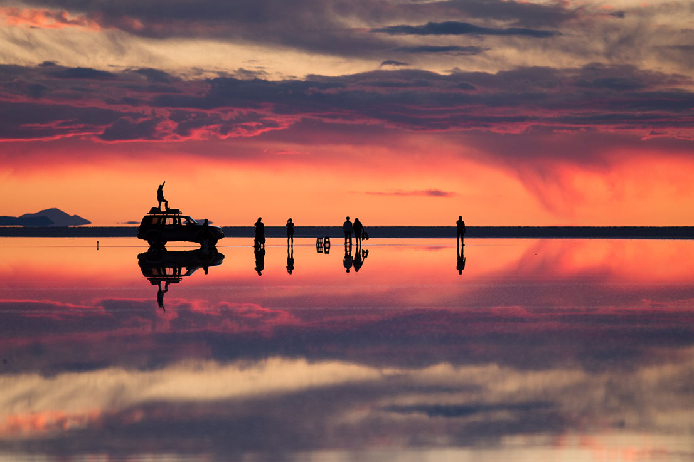

O Deserto de Uyuni (ou Salar de Tunupa)
É o maior e mais alto deserto de sal do mundo, com 10 582 quilômetros quadrados e a 3 656 metros acima do nível médio do mar. Ele está localizado nos departamentos de Potosí e Oruro, no sudoeste da Bolívia, perto da borda da Cordilheira dos Andes. O salar é também o único ponto natural brilhante que pode ser visto do espaço. Ele serviu de guia para os astronautas da Apollo 11, que chegaram à lua em 1969. Quando os astronautas viram a planície branca pela primeira vez, chegaram a pensar que fosse uma geleira.

Como foi formado o Deserto de Uyuni?